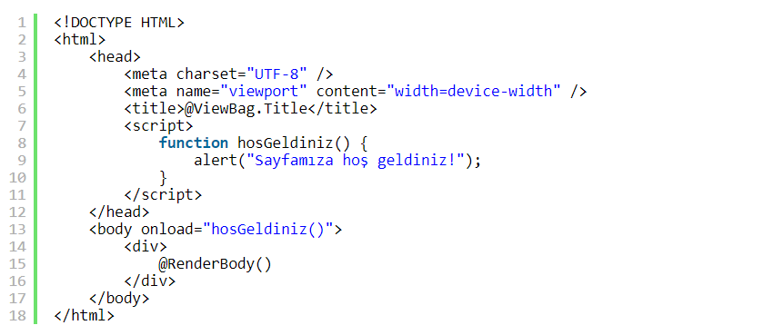

UZAKTAN EĞİTİM 1. HAFTA
JavaScript'te bazı olayların gerçekleştirilmesi için geliştirilmiş ve web sitelerinde senelerdir başarı ile kullanılan hazır olaylar vardır. Şimdi bu olayları öğrenmeye başlayalım.
-onload Olayı:
Daima etiketi ile kullanılır. Sayfa yüklendikten sonra gerçekleşecek olayları yerine getirir.
hosGeldiniz( ) isimli bir fonksiyon tanımladım ve bu fonksiyonumu onload olayı ile body etiketi içerisinde kullandım. Sayfam yüklendikten sonra "Sayfamıza hoş geldiniz!" bildirimi yayınlanacaktır. onload olayı bu şekilde çalışmaktadır.
Bu kodları onload olayını kullanmadan bu şekilde de yazabiliriz.
-onclick Olayı:
En çok kullanılan olaydır. Bir nesneye tıklandığında çalışacak kodları yerine getirir.
Şeklinde kodlarımız olsun. HTML5 derslerinde kullandığımız örnek bir form. İlk olarak onayla( ) ve temizle( ) isimli iki fonksiyon tanımladım. Bunları "Onayla" ve "Form Temizle" düğmelerinde kullandım.
Burada dikkatimizi çeken temizle( ) fonksiyonundaki confirm( ) fonksiyonu ve return deyimi olmalı. confirm dilimizde onayla anlamına gelmektedir. "Ok" ve "Cancel" seçimlerinin olduğu bir uyarı penceresi açar. Fonksiyonda ve onclick olayında return kullanmamızın sebebi kullanıcı iptal'e tıkladığında reset'leme işlevinin yerine getirilmemesini sağlamak için.
Formdaki "Onayla" ve "Formu Temizle" düğmelerini test edebilirsiniz.
-onfocus ve onblur Olayları :
onfocus nesne seçildiğinde meydana gelecek olayları, onblur ise seçimden çıkıldığında gerçekleşecek olayları belirtir. CSS'teki :focus sözde sınıfı ile aynı işlevi gördüğü için kullanımı gereksizdir. Bu yüzden bu olayı örneklendirmiyorum. Yine de bilmenizde fayda var.
-onerror Olayı :
Tarayıcı nesneyi sayfa yükledikten sonra meydana gelecek olayları gerçekleştirir.
hata( ) isimli bir fonksiyonumuz olsun ve hata uyarısını versin. cicek.png dosyasımız sayfada yüklenemediği zaman bir uyarı penceresi açılacak.
-onmousedown, onmousemove, onmouseout, onmouseover ve onmouseup Olayları :
Fare imleci ile bir nesnenin üzerine gelindiğinde gerçekleşecek olayları sağlarlar. onmousedown fare ile bir tuşa basıldığında, onmousemove nesnenin üzerinde gezildiğinde, onmouseout nesnenin üzerinden gidildiğinde, onmouseover nesnenin üzerine gelindiğinde, onmouseup ise tuşa basmaktan vazgeçildiğinde gerçekleşecek olayları yerine getirir. Tüm bu olaylar CSS'teki :active, :hover, :focus gibi sözde sınıflar ile aynı işlevleri yerine getirdikleri için artık kullanılmamaktadırlar.